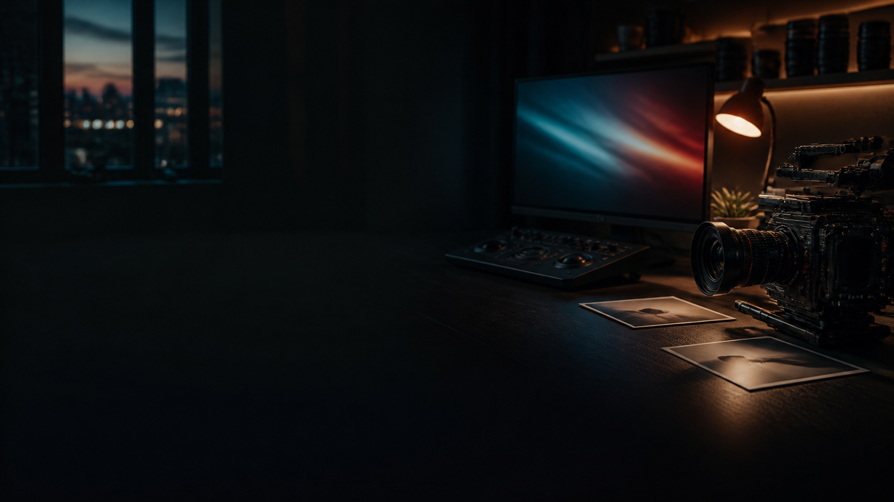

TIMELINE
Build the cut
Place unlimited clips side by side or stack them across layers. Trim, split, snap, zoom, move linked audio, and watch the result update in the program monitor.
THE DESKTOP
EDITING ROOM
For the cut you keep coming back to. Video, sound, colour and animation in one native editing workspace. Made by netvistastudio.

THE EDITING ROOM
NetVista Studio brings picture, sound, colour, effects, 3D work, and safe creator-made extensions into one connected native desktop app. The project format and editing flow travel with you across macOS, Windows, and Linux.
Start with a rough sequence. Save an editable project and return to it when the next idea arrives. Your media stays on your computer unless you choose to share or export it.
INSIDE THE STUDIO
Picture, sound and everything between.
TIMELINE
Place unlimited clips side by side or stack them across layers. Trim, split, snap, zoom, move linked audio, and watch the result update in the program monitor.
COLOUR
Shape lift, gamma and gain, tune primary controls, and bring in a 3D LUT.
EFFECTS
Animate transform, opacity, blur, glow, vignette, Ultra Key, and more with keyframes.
ANIMATED 3D
On macOS, import models, make maps, animate objects and cameras, pose bones in rigged assets, add physics, place keyed video screens, and remove their green screen. Windows and Linux preserve the editable scene data in this beta.
MODS + DELIVERY
Install data-only creator mods for themes and native information pages, browse checked creator catalogs, switch packages on or off, then deliver at a preset or custom size up to 16K.
A CONNECTED WORKFLOW
Every page keeps the edit visible, so creative decisions stay in context.
PUBLIC BETA · VERSION 1.4
This is an early beta, not a finished production release. Features may be incomplete and bugs may occur, so keep backups of important projects and media.
The editor is built in the open with Swift, AppKit, Qt, AVFoundation and FFmpeg. No browser runtime powers the desktop apps.
$ git clone https://github.com/user1994g/videoediterNetVistaStudio.github.io.git
$ cd videoediterNetVistaStudio.github.io
$ sh build_app.sh
NETVISTA STUDIO 1.4 BETA 3
Pick the computer you want to install NetVista Studio on. Every download is beta software, so keep backups of important work.
Beta release Windows and Linux downloads contain the complete app folder. Unzip the full folder before launching NetVista Studio.
View release notes and all downloads ↗NETVISTA STUDIO · PUBLIC BETA
Sign in or create a free NetVista account to unlock the app downloads. Your editing projects remain local to your computer.
Passwords are sent to Supabase Auth over HTTPS, not saved by this page. App downloads and source code are also publicly available on GitHub.